Recorded from the app running on real cached SPHEREx data. No sound.
Discovery: find what no catalogue explains
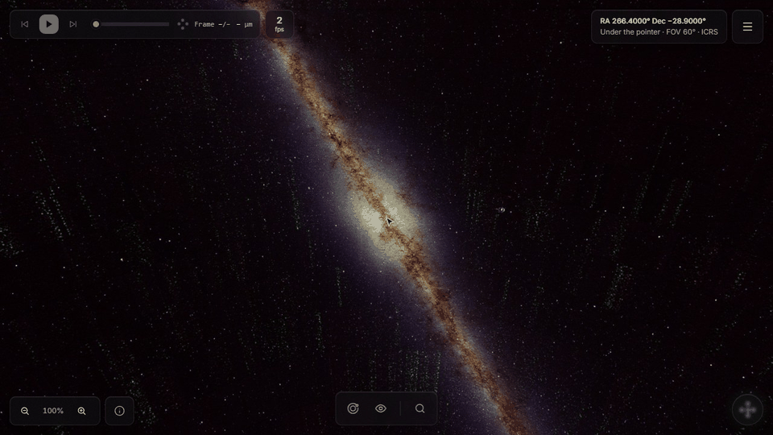
Start a scan. Click the eye, pick a patch of sky, and it is scanned square by square. Green circles are known objects, amber ones unexplained. Test datanew
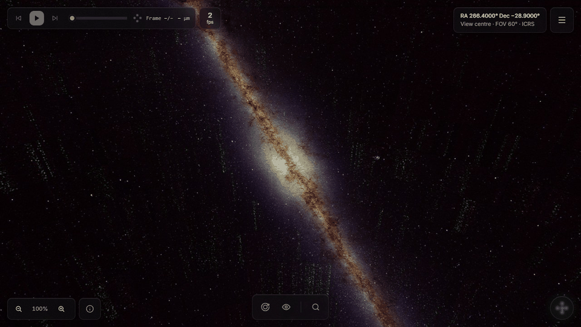
Replay a real scan. Our 14 Nov scan of 4 squares, replayed in seconds. Open a square and pick an unexplained track to see its spectrum. newOne square, one unknown. Square 1 with all its plot points. T23 is unexplained; its graph compares each measurement with the Sun's colour. new
Barnard's Star: from the sky to 3D
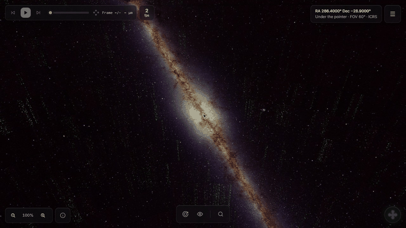
Search, play, build. Find Barnard's Star, play its SPHEREx frames, build it in 3D, explore the surface, then switch from true colour to ultraviolet. new
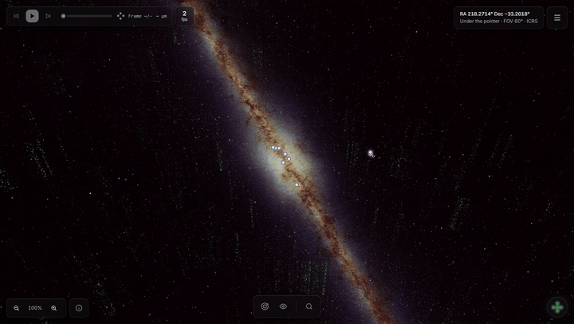
Search the sky. Type a name and the sky flies there. The flipbook plays the real SPHEREx frames of that patch.
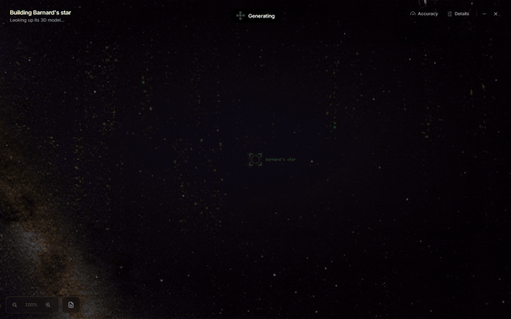
Build it. Mould, surface, spots, colour.
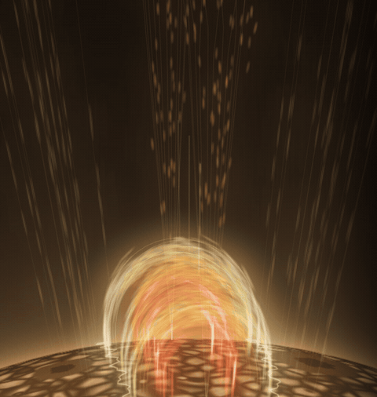
Explore a star. A flare at the edge of Barnard's Star.
More of the app
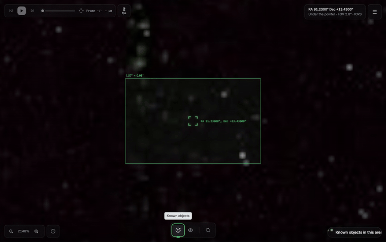
Track a moving asteroid. 433 Eros across SPHEREx frames, its spectrum built hop by hop. Demo data
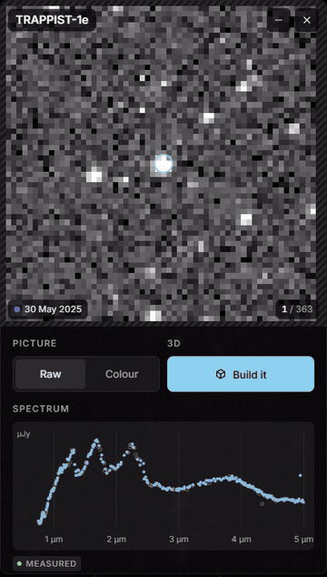
Flipbook and spectrum. Each frame is a different wavelength; the spectrum is measured from them.
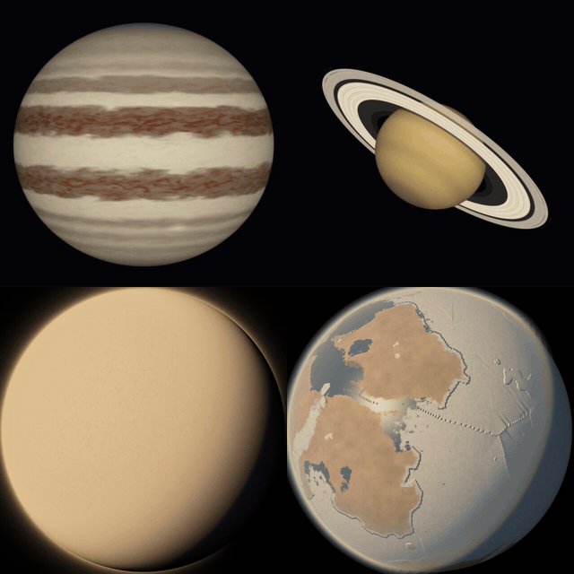
Turn it in your hand. Jupiter, Saturn, K2-18 b and Kepler-186 f.
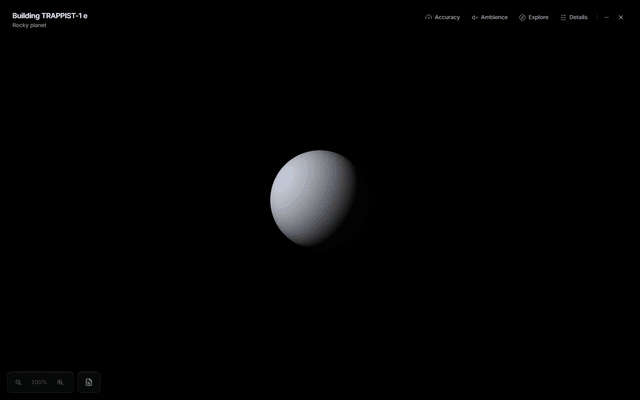
Build a planet. TRAPPIST-1 e from molten globe to continents.
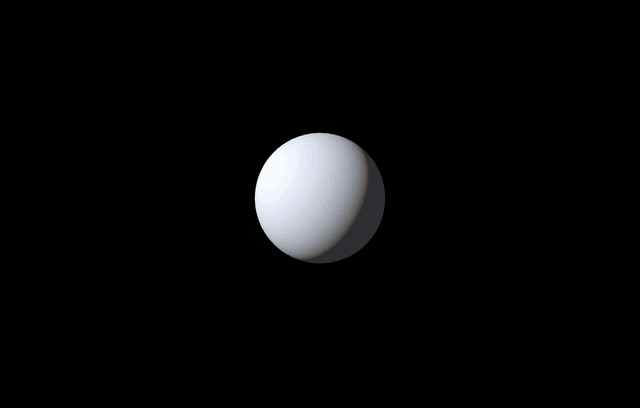
A real shape. 433 Eros built from its shape model.
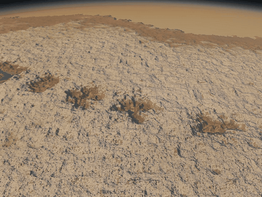
Fly over it. Kepler-186 f from low altitude.
Planet and star surfaces are artist's impressions, and the app labels them so. Spectra, frames and tracks are measured from SPHEREx data unless tagged otherwise.